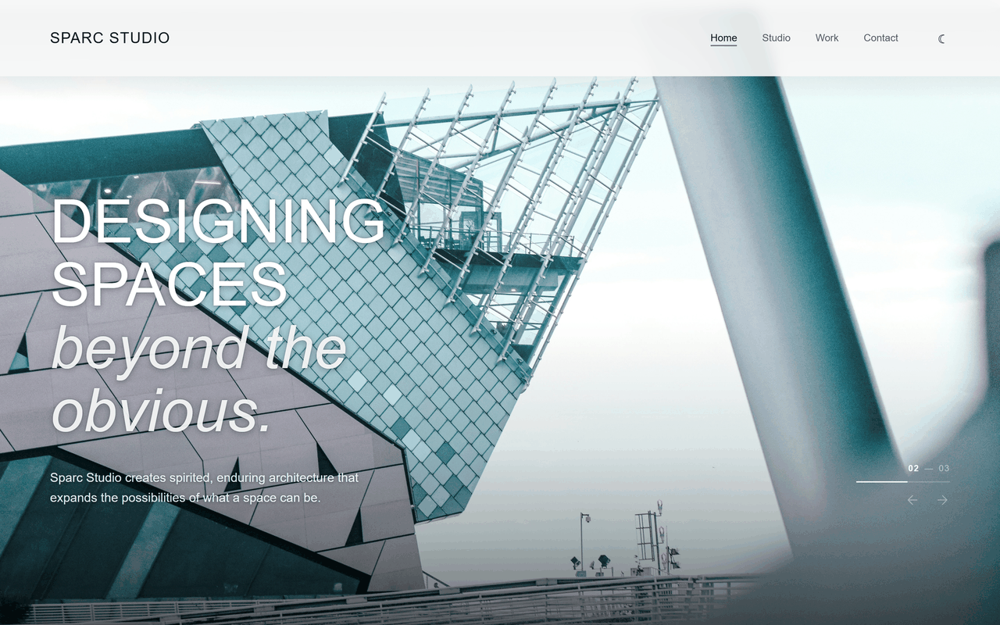
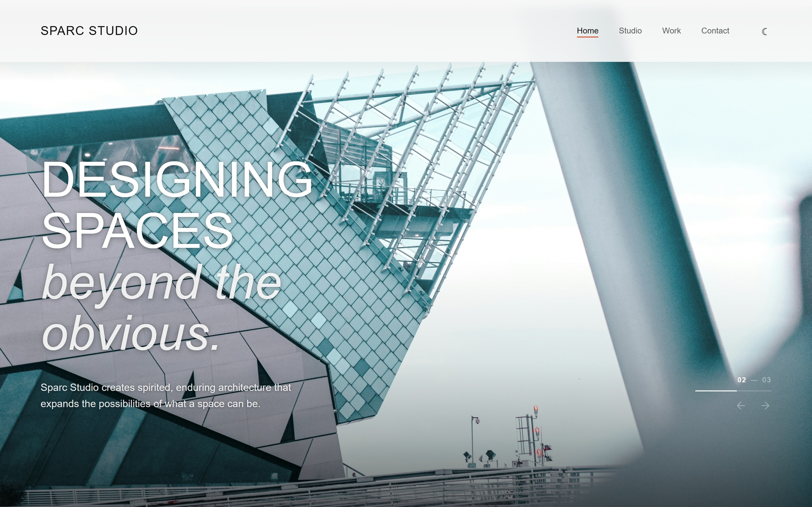
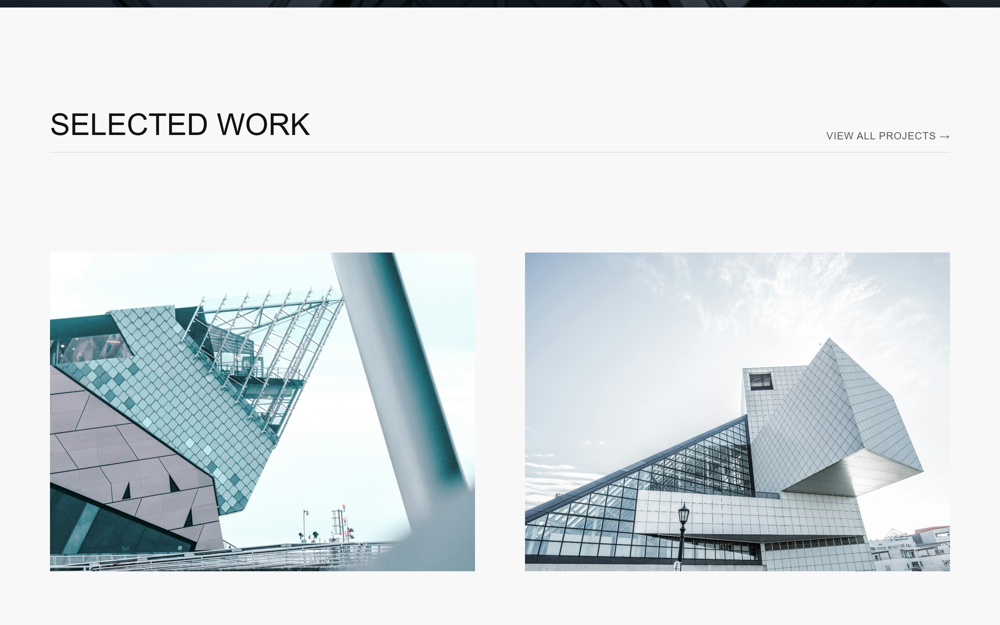
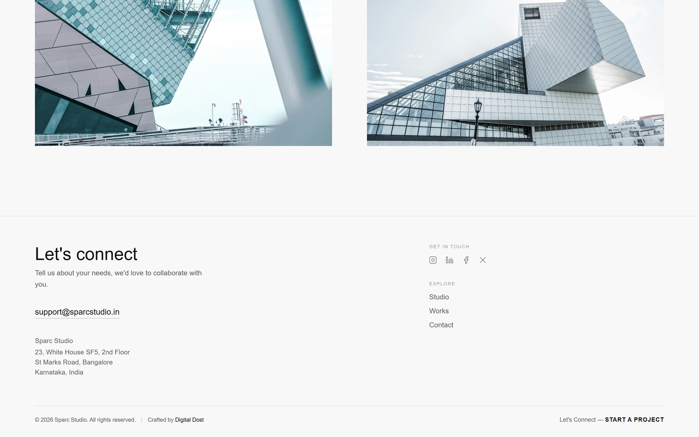

Website previewScreenshots
High-resolution captures of key sections from the live website.



Want to explore the full live website?
Visit Live WebsiteA clean architecture portfolio website for Sparc Studio with project gallery, studio narrative, and a clear contact journey.

Website previewHigh-resolution captures of key sections from the live website.



Want to explore the full live website?
Visit Live Website